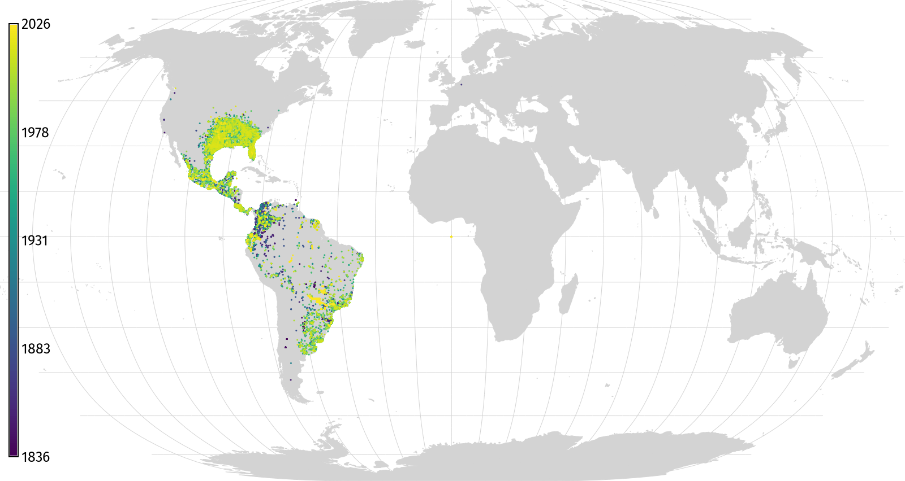
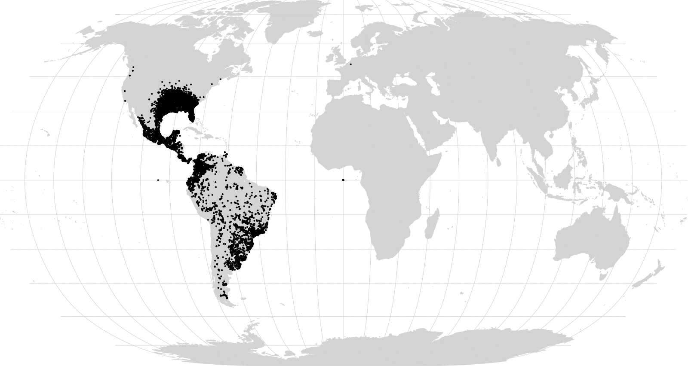
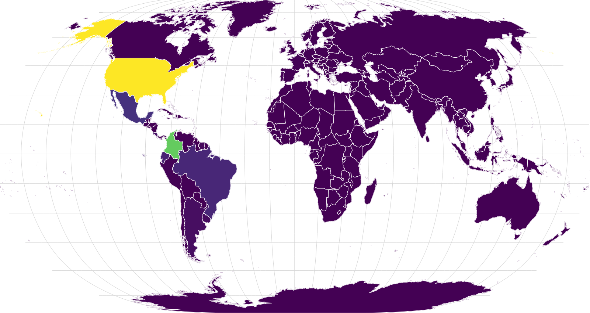
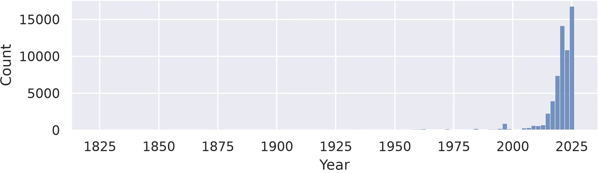
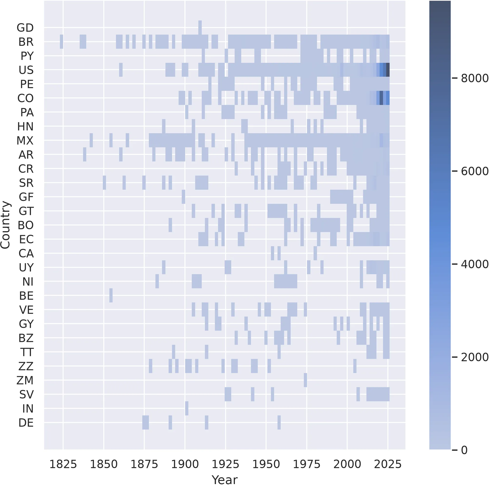
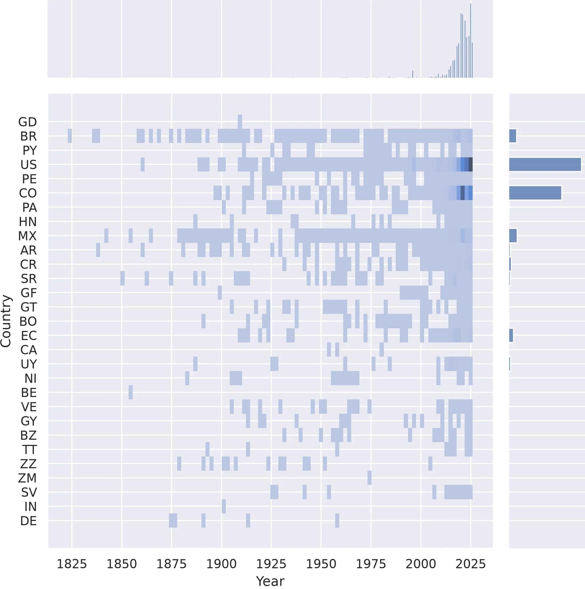
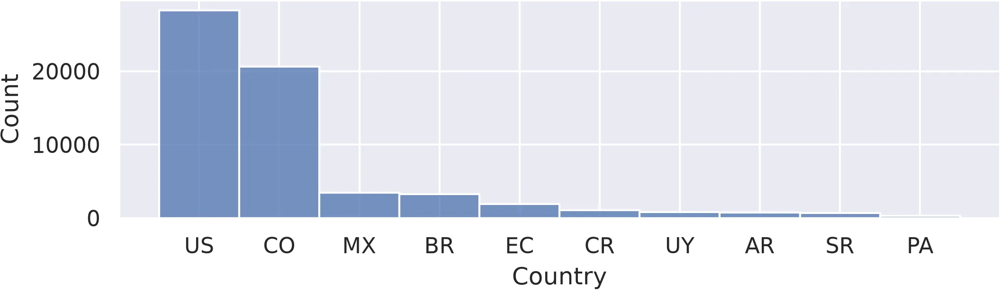

# Import libraries
import io
import sys
import subprocess
from pathlib import Path
import requests
from zipfile import ZipFile
import functools
import shutil
import pandas as pd
import seaborn as sns
sns.set_theme()
# Find GRASS Python packages
sys.path.append(
subprocess.check_output(
["grass", "--config", "python_path"],
text=True
).strip()
)
# Import GRASS packages
import grass.jupyter as gj
import grass.script as gs
from grass.tools import ToolsSpecies Distribution
tutorial
ecology
grass
python
Mapping species distribution with GRASS.

Learn how to download, map, and plot observations of species occurrence.
Setup
Create project
Start a GRASS session in a project with the Natural Earth II coordinate system.
# Start GRASS in Natural Earth II project
gs.create_project("natural_earth", epsg=54078, overwrite=True)
session = gj.init("natural_earth")
tools = Tools()
# Print projection information
tools.g_proj(format="shell", flags="p").textDownload species data
# Set url
url = "https://api.gbif.org/v1/occurrence/download/request/0010338-260806074905277.zip"
# Set path
directory = Path.cwd() / "data"
directory.mkdir(exist_ok=True)
data = directory / Path(url).name
# Download dataset
request = requests.get(url, allow_redirects=True)
if request.status_code != 200:
raise ConnectionError(f"Error downloading file: {request.status_code}")
data.write_bytes(request.content)
print(data)
# Unarchive dataset
with ZipFile(data, 'r') as archive:
archive.printdir()
archive.extractall(path=data.parent)
# Set path
species = data.with_suffix(".csv")
print(species)
# Delete archive
data.unlink()Download landmasses
# Set url
url = "https://naciscdn.org/naturalearth/50m/physical/ne_50m_land.zip"
# Set path
directory = Path.cwd() / "data"
directory.mkdir(exist_ok=True)
data = directory / Path(url).name
# Download dataset
request = requests.get(url, allow_redirects=True)
if request.status_code != 200:
raise ConnectionError(f"Error downloading file: {request.status_code}")
data.write_bytes(request.content)
print(data)
# Unarchive dataset
with ZipFile(data, 'r') as archive:
archive.printdir()
archive.extractall(path=data.parent)
# Set path
land = data.with_suffix(".shp")
print(land)
# Delete archive
data.unlink()Download countries
# Set url
url = "https://naciscdn.org/naturalearth/50m/cultural/ne_50m_admin_0_countries.zip"
# Set path
directory = Path.cwd() / "data"
directory.mkdir(exist_ok=True)
data = directory / Path(url).name
# Download dataset
request = requests.get(url, allow_redirects=True)
if request.status_code != 200:
raise ConnectionError(f"Error downloading file: {request.status_code}")
data.write_bytes(request.content)
print(data)
# Unarchive dataset
with ZipFile(data, 'r') as archive:
archive.printdir()
archive.extractall(path=data.parent)
# Set path
countries = data.with_suffix(".shp")
print(countries)
# Delete archive
data.unlink()Import reference data
# Import land
tools.v_import(input=land, output="land")
# Import countries
tools.v_import(input=countries, output="countries")Visualize reference data
# Display landmasses
m = gj.Map(width=1600)
m.d_vect(map="land", color="black", fill="black")
m.d_grid(size=15, color="black", flags="gbt")
m.show()Install extension
# Install extension
tools.g_extension(extension="v.in.gbif")Import species data
# Import species data
tools.v_in_gbif(input=species, output="armadillos", dir=species.parent, flags="r")Map species occurrence
# Display species
m = gj.Map(width=1600)
m.d_vect(map="land", color=(211,211,211), fill=(211,211,211))
m.d_grid(size=15, color=(211,211,211), flags="gbt")
m.d_vect(map="armadillos", color="black", fill="black", size=6, icon="basic/point")
m.show()
Map species occurrence over time
# Print table header
tools.db_columns(table="armadillos", format="plain")v.extract v.colors g.region v.to.rast
# Filter years
tools.v_extract(input="armadillos", output="year", where="g_year != 0")
# Set color gradient
tools.v_colors(map="year", use="attr", column="g_year", color="viridis")
# Rasterize
tools.g_region(vector="land", res=1000)
tools.v_to_rast(input="year", output="year", use="attr", attribute_column="g_year")
tools.v_colors(map="year", color="viridis")
# Display species
m = gj.Map(width=1600)
m.d_vect(map="land", color=(211,211,211), fill=(211,211,211))
m.d_grid(size=15, color=(211,211,211), flags="gbt")
m.d_vect(map="year", color="none", size=6, icon="basic/point")
m.d_legend(raster="year", at=(5, 95, 1, 2), font="FiraSans-Regular", fontsize=18, flags="sf")
m.show()Map species occurrence by country
# Sample points
tools.v_vect_stats(points="armadillos", areas="countries", count_column="count")
# Set color gradient
tools.v_colors(map="countries", use="attr", column="count", color="viridis")
# Visualize
m = gj.Map(width=1600)
m.d_vect(map="land", color="white", fill=(211,211,211))
m.d_grid(size=15, color=(211,211,211), flags="gbt")
m.d_vect(map="countries")
tools.v_colors(map="countries", flags="r")
m.d_vect(map="countries", color="white", fill="none")
m.show()
# Save image
m.save("images/species-distribution-04.webp")
Parse table
db.columns v.db.select pandas.DataFrame pandas.DataFrame.rename
# Print table header
tools.db_columns(table="armadillos", format="plain")# Export table with observations by country and year
data = tools.v_db_select(map="armadillos", columns=("g_countrycode", "g_year"), where="g_year != 0", format="json")
data = data["records"]
# Print table
df = pd.DataFrame(data)
df = df.rename(columns={"g_year": "Year", "g_countrycode": "Country"})
print(df)Plot histogram
# Plot count by year
plot = sns.histplot(df, x="Year", bins=100)
Plot bivariate histogram
# Bivariate histogram
plot = sns.histplot(df, x="Year", y="Country", bins=100, cbar=True)
Plot bivariate and univariate histograms
# Bivariate and univariate histograms
plot = sns.jointplot(df, x="Year", y="Country", bins=100, kind="hist")
Plot sorted histogram
# Filter
threshold = 2
counts = df["Country"].value_counts()
categories = counts[counts >= threshold].index
df = df[df["Country"].isin(categories)]
# Sort
df = (df.assign(counts=df.groupby("Country")["Country"].transform("count"))
.sort_values(by="counts", ascending=False)
.drop(columns="counts"))
# Plot count by country
plot = sns.histplot(df, x="Country")